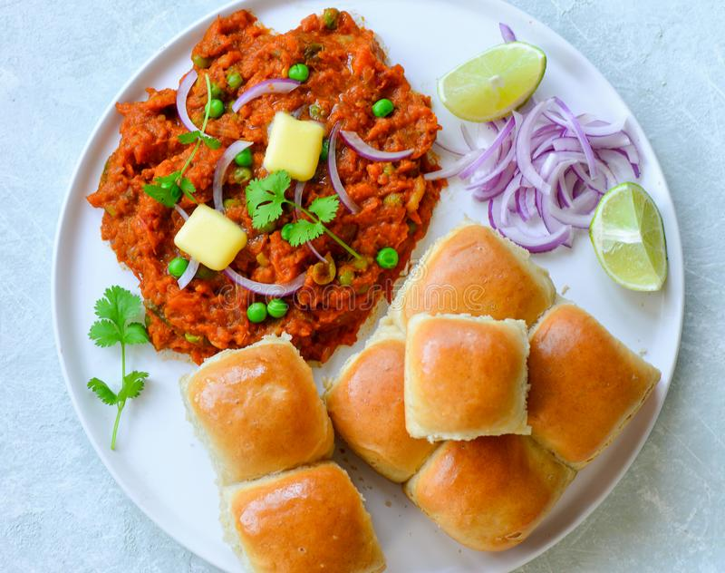

Pav Bhaji

Description:
Pav bhaji is a fast food dish from India consisting of a thick vegetable curry (bhaji) served with a soft bread roll (pav). Its origins are in the state of Maharashtra in India.
It is a spiced mixture of mashed vegetables in a thick gravy served with bread. Vegetables in the curry may commonly include potatoes, onions, chillies, peas, bell peppers and tomatoes. Street sellers usually cook the curry on a flat griddle (tava) and serve the dish hot. A soft white bread roll is the usual accompaniment to the curry, but this does not preclude the use of other bread varieties such as chapati, roti or brown bread.
The dish originated as a fast lunchtime dish for textile mill workers in Mumbai. Pav bhaji was later served at restaurants throughout the city. It is now offered at outlets from simple hand carts to formal restaurants in India and abroad.
Ingredients:
- 1.5 tsp Pav Bhaji Masala (mixed condiments)
- 2 tbsp butter
- 3 tomatoes (finely chopped)
- 1/4 cup peas
- 1/2 capsicum (finely chopped)
- 2 potatoes (boiled & mashed)
- 1 onion (finely chopped)
- 1+1/4 tsp kashmiri red chilli powder
- 1/4 turmeric powder
- 2 tsp fenugreek leaves (Kasuri methi)
- 3 tbsp coriander leaves (finely chopped)
- 1 tsp ginger garlic paste
- 1/2 tbsp lemon juice
- 3 drops red food color (optional)
- water to adjust consistency.
To toast pav:
- 7 pav
- 4 tsp butter
- 1/2 tsp kashmiri red chilli powder
- 1/2 tsp pav bhaji masala
- 4 tsp coriander leaves
Steps:
- Firstly, in a large griddle (tava) heat 1 tbsp butter and add vegetables. Cook and mash well.
- Now add 1 tsp chilli powder, ¼ tsp turmeric, 1 tsp pav bhaji masala, 1 tsp fenugreek leaves and 2 tbsp coriander leaves.
- Heat a tbsp of butter and add ¼ tsp chilli powder, ½ tsp pav bhaji masala, 1 tsp fenugreek leaves.
- Also add 1 tbsp coriander leaves, 1 tsp ginger garlic paste, 1 onion and ½ lemon juice. saute well.
- Now add 3 drops of red food colour and mix well.
- Boil and mash this gravy for 5 minutes adjusting consistency.
- Finally, serve pav and bhaji as pav bhaji.